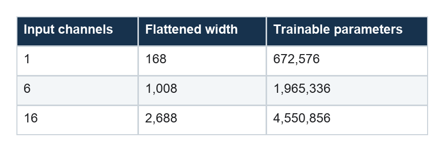

N-BEATS-Style Forecasting: Explaining the Past to Build the Future
Backcast residuals, forecast additions, and a fully connected route to multi-horizon prediction
Series: Sequence Models for Prediction, Part 11 of 15
N-BEATS approaches forecasting with an elegant iterative idea:
Let one block explain part of the observed window, remove that explanation, and let later blocks work on what remains. Add every block’s forecast contribution to form the future.
There is no recurrence, convolution, or attention. Deep fully connected blocks operate on a flattened history, connected by backward and forward residual paths.
The architecture’s structure—not a sequential state transition—creates its forecasting bias.
Backcast and forecast
Each block receives a residual representation of the input and emits two vectors:
- a backcast, which tries to explain the block’s portion of the historical input;
- a forecast, which contributes to the predicted horizon.
The stack updates:
residual_(k+1) = residual_k - backcast_k
forecast_total = forecast_total + forecast_k
The first block may capture broad level and seasonality. The next receives what the first failed to explain and can focus on another structure. The decomposition is learned jointly to minimize forecast loss.
This resembles boosting in spirit: later components concentrate on a residual. It is not classical boosting, because all blocks are trained together inside one neural network.
Generic and interpretable variants
The original N-BEATS paper presents generic blocks with learned basis projections and interpretable configurations whose trend and seasonality stacks use constrained basis functions.
A compact generic-inspired variant can give each block three 256-unit ReLU layers, followed by one dense backcast head and one dense 24-step forecast head.
for block in self.blocks:
backcast, contribution = block(residual)
residual = residual - backcast
forecast = forecast + contribution
There are three blocks. The code captures the backward/forward residual intuition but does not reproduce every design choice of the published N-BEATS architectures.
“N-BEATS-style” is therefore the accurate name.
Flattening gives global access
Like the linear model and MLP, this architecture flattens all 168 historical steps and all feature channels.
Every block can access every position directly. It does not have to remember a week-old observation through recurrence or expand a convolutional receptive field.
The backcast head is as wide as the flattened input. That becomes expensive when features are added.

The full model has nearly seven times as many parameters as the demand-only model.
This growth makes multivariate extensions much more expensive than the original univariate use case.
What the residual stack can learn
With enough data and regularization, generic blocks can discover useful decompositions without being told which component is trend or seasonality.
One block might explain slow level, another a repeating daily profile, and another transient deviations. But the blocks are not forced to align with those human concepts.
If interpretability is required, use constrained basis expansions and inspect stack outputs. Even then, interpretability describes the model’s decomposition—not necessarily the true physical causes of demand.
How the blocks are trained
The entire stack is optimized end to end against forecast loss. There is usually no separate target telling a block what its backcast should represent. The residual pathway encourages specialization, while the forecast objective decides whether that specialization is useful.
The number of stacks, blocks, hidden layers, hidden width, and basis size control capacity. Forecast ensembles are common because independently trained N-BEATS models can settle on different useful decompositions.
For probabilistic forecasting, the output heads and loss must be changed to predict quantiles or distribution parameters rather than a single point estimate.
Complete PyTorch implementation
The full generic-inspired implementation requires both the residual block and the outer forecaster. Every block emits a backcast with the same width as the flattened input and a contribution with the same width as the forecast horizon.
import torch
from torch import nn
class NBEATSBlock(nn.Module):
def __init__(
self,
input_dim,
horizon,
hidden=256,
depth=3,
):
super().__init__()
layers = []
width = input_dim
for _ in range(depth):
layers.extend([
nn.Linear(width, hidden),
nn.ReLU(),
])
width = hidden
self.body = nn.Sequential(*layers)
self.backcast_head = nn.Linear(
hidden,
input_dim,
)
self.forecast_head = nn.Linear(
hidden,
horizon,
)
def forward(self, x):
hidden = self.body(x)
backcast = self.backcast_head(hidden)
forecast = self.forecast_head(hidden)
return backcast, forecast
class NBEATSForecaster(nn.Module):
def __init__(
self,
lookback,
n_features,
horizon,
n_blocks=3,
hidden=256,
depth=3,
):
super().__init__()
self.input_dim = lookback * n_features
self.horizon = horizon
self.blocks = nn.ModuleList([
NBEATSBlock(
self.input_dim,
horizon,
hidden=hidden,
depth=depth,
)
for _ in range(n_blocks)
])
def forward(self, x):
residual = x.flatten(start_dim=1)
forecast = torch.zeros(
x.size(0),
self.horizon,
device=x.device,
dtype=x.dtype,
)
for block in self.blocks:
backcast, contribution = block(
residual
)
residual = residual - backcast
forecast = forecast + contribution
return forecast
LOOKBACK = 168
N_FEATURES = 1
HORIZON = 24
model = NBEATSForecaster(
lookback=LOOKBACK,
n_features=N_FEATURES,
horizon=HORIZON,
)
x = torch.randn(32, LOOKBACK, N_FEATURES)
y_hat = model(x)
assert y_hat.shape == (32, HORIZON)
This is intentionally labeled N-BEATS-style because it demonstrates generic backcast/forecast residual blocks without reproducing every published basis and stack configuration. The same verified implementation is available in the companion model module. The full Dataset, DataLoader, and fit/evaluate workflow is explained in the shared PyTorch training companion.
Strengths
The N-BEATS idea offers:
- direct multi-horizon output;
- global access to the input window;
- iterative residual refinement;
- no recurrent training bottleneck;
- optional human-readable trend and seasonality bases;
- a strong fit for univariate forecasting.
It is especially attractive when the target’s own history carries most of the signal.
Limitations
Flattened dense layers scale poorly with long context and many channels. The model does not naturally share local detectors across time, and a simple multichannel extension departs from the original univariate emphasis.
Residual explanations can also be misleading if treated as physical components without validation.
Common failure modes
Large dense backcast heads can dominate memory and parameters. Adding variables or lengthening context may require an input bottleneck, channel-independent processing, or another architecture entirely.
The learned decomposition should not be assumed to correspond to physical trend and seasonality unless the basis is constrained and the components are validated. Even interpretable basis outputs explain the model, not necessarily the data-generating process.
Overfitting can hide behind a plausible decomposition, so chronological validation and strong naive baselines remain essential.
When to choose N-BEATS
Choose it when direct multi-horizon univariate prediction is central, global window access matters, and residual decomposition is attractive.
Be cautious when feature count and context length make the dense backcast heads enormous. Report parameter count beside accuracy.
We now have a direct explanation of every model in the series. Part 12 compares them as architectural choices before any dataset-specific leaderboard enters the discussion.
Further reading
Series navigation: Series index · Previous: Patch Transformer forecasting · Next: Choosing a model